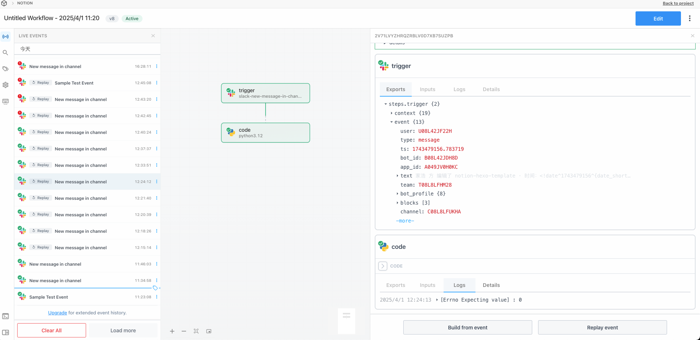

Notion+Hexo 博客解决方案
创作&开发
Notion
-
使用 notion 进行内容创作
-
使用 notion database 进行知识库整理
本文使用 hexo 平台，可参考elog-hexo-template 创建数据库副本或增加必要属性到已有 Notion 数据库
Hexo
使用 Hexo 进行博客开发
-
使用git分支保存源码
因Github Page要求使用master分支作为发布网站的源代码，我们只能用master分支来保存hexo生成的静态网页，对于博客源码，可以新建一个source分支来存储。在github上打开Pages对应的仓库，也就是以”username.github.io”命名的仓库，然后建立一个source分支，仓库的默认分支改为保存源码的source分支，这样通过
git clone拉取的就是source分支代码了。 -
根据自己喜好配置 Hexo
这里可以自行搜索，也可以参考《Hexo 相关记录》一文
-
仓库源码大致目录结构如下
1
2
3
4
5
6
7
8
9
10
11
12
13
14
15
16
17.
├── README.md
├── _config.landscape.yml
├── _config.next.yml
├── _config.yml
├── db.json
├── elog.cache.json
├── elog.config.js
├── hexo.sh
├── node_modules
├── package-lock.json
├── package.json
├── public
├── scaffolds
├── source
├── themes
└── time.txt
CI/CD
本项目持续集成的路径为：notion ⇒ slack ⇒ pipedream ⇒ elog + github action
Slack
- 注册 Slack
注册完成后创建工作区

-
创建频道（channel）
-
添加应用 Notion
-
全部创建完成后如图
Notion
-
创建 automation，设置触发器
在数据库页面点击闪电按钮，可以创建
automation，增加触发器以及执行器根据自己喜好设置触发器，设置完成后如下

Pipedream
-
注册
-
创建 Project

-
创建 workflow
在 project 下创建workflow

-
设置 workflow
设置 workflow，触发器选择 Slack，选择New Message In Channels ，按照如下设置

Slack 的相关配置示例如下

-
增加 Python step
增加一个 Python Step，代码如下所示

1
2
3
4
5
6
7
8
9
10
11
12
13
14
15
16
17
18
19
20
21
22
23
24
25
26
27import os
import requests
import json
def handler(pd: "pidedream"):
try:
token = os.environ['GITHUB_TOKEN']
user = "github_username"
repo = "github_repo"
event_type = "deploy"
headers = {
"User-Agent": "@elog/serverless-api",
"Accept": '*/*',
"Authorization": f"token {token}",
}
response = requests.post(
f"https://api.github.com/repos/{user}/{repo}/dispatches",
headers=headers,
data=json.dumps({"event_type": event_type})
)
# response.raise_for_status()
print(response.text, response.json())
return {"message": response.json() or 'Success!'}
except Exception as e:
print(e) -
设置完成后如图所示

-
配置环境变量，用于 code 中使用，在环境中通过
os.environ['your_token']来使用
Elog + Github Action
-
在博客文件夹根目录配置 Elog
参考官方文档进行操作，其余相关配置以官方文档为准。
-
项目添加 workflow 配置
在项目文件夹根目录增加 github actions 相关配置文件
.github/workflows/main.yaml1
2
3
4
5
6
7
8
9
10
11
12
13
14
15
16
17
18
19
20
21
22
23
24
25
26
27
28
29
30
31
32
33
34
35
36
37
38
39
40
41
42
43
44
45
46
47
48
49
50
51
52
53
54
55
56
57
58
59
60
61
62
63
64
65
66
67
68
69
70
71
72
73
74
75
76
77
78
79
80
81
82
83name: Deploy To Github Pages
on:
# 允许手动push触发
push:
branches:
# 存放源码的分支
- master
# 允许外部仓库事件触发
repository_dispatch:
types:
# api中的event_type就是这个
- deploy
jobs:
build:
runs-on: ubuntu-latest
steps:
- name: 检查分支
uses: actions/checkout@master
- name: 安装node环境
uses: actions/setup-node@master
with:
node-version: "16.x"
- name: 安装依赖
run: |
export TZ='Asia/Shanghai'
npm install --prod
- name: 拉取语雀/Notion的文章
env:
# 语雀相关环境变量
YUQUE_TOKEN: ${{ secrets.YUQUE_TOKEN }}
YUQUE_LOGIN: ${{ secrets.YUQUE_LOGIN }}
YUQUE_REPO: ${{ secrets.YUQUE_REPO }}
# Notion相关环境变量
NOTION_TOKEN: ${{ secrets.NOTION_TOKEN }}
NOTION_DATABASE_ID: ${{ secrets.NOTION_DATABASE_ID }}
# 图床相关环境变量，以腾讯云COS为例
COS_SECRET_ID: ${{ secrets.COS_SECRET_ID }}
COS_SECRET_KEY: ${{ secrets.COS_SECRET_KEY }}
COS_IMAGE_BUCKET: ${{ secrets.COS_IMAGE_BUCKET }}
COS_IMAGE_REGION: ${{ secrets.COS_IMAGE_REGION }}
run: |
# 对应package.json中的script.sync
npm run sync
- name: 配置Git用户名邮箱
run: |
git config --global user.name "xxx"
git config --global user.email "xxx@xx.com"
- name: 提交yuque拉取的文章到GitHub仓库
run: |
echo `date +"%Y-%m-%d %H:%M:%S"` begin > time.txt
git add .
git commit -m "更新文档" -a
- name: 推送文章到仓库
uses: ad-m/github-push-action@master
with:
github_token: ${{ secrets.GITHUB_TOKEN }}
- name: 生成静态文件
run: |
# 对应package.json中的script.build
npm run build
- name: 部署到Github Pages
uses: peaceiris/actions-gh-pages@v4
with:
# 这里使用 github token
personal_token: ${{ secrets.GITHUB_TOKEN }}
# hexo 设置为这个路径
publish_dir: ./public
external_repository: JiaHaoFang/JiaHaoFang.github.io
# 存放 github page 静态文件的分支
publish_branch: master
commit_message: ${{ github.event.head_commit.message }} -
添加环境变量
根据 Elog 文档获取对应的环境变量，添加到 github 仓库设置

-
配置Actions 执行权限
在仓库的 Settings-Actions-Genaral-Workflow permissions 中配置执行权限

-
Github Page 设置
设置 Github Page 的部署分支（区分与源代码分支），这里本人使用 master 部署静态页面，使用 source 分支存放源码

执行效果
-
Slack

-
pipedream

-
Github Actions